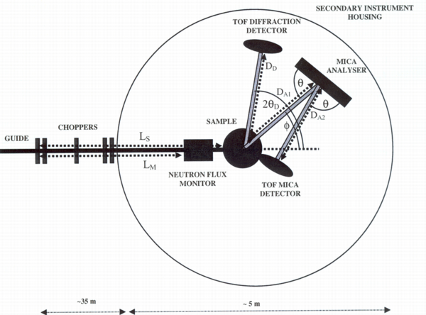

Indirect Time-of-Flight and Coordinates¶
I am having some problems describing a indirect time-of-flight instrument we are currently building. The name of the instrument is MARS. See this image for a schema.

The instrument has 12 elastic detectors. These go in a separate NXentry group and are covered by the the TOFNPD DTD. However, I missed information about choppers in that DTD. This leads to my first question: Is TOF-monitors, data and distances really the only items needed for data analysis for TOFNPD?
There are also 12 inelastic detectors. Theya are supposed to go in another NXentry group following the to-be-defined TOFNIG-DTD. Each of them is mounted on a triffid together with an analyzer. The triffids are positioned at various polar_angles with respect to the sample. On each triffid the analyzers move upwards and scatter neutrons into the detectors below them. In order to make this perfectly clear: scattering happens in the vertical plane. There are several problem here:
I tend to treat both the analyzers and the detectors as a bank each. They are usually moved together; any differences can be caught in parameter arrays.
How to describe the analyzer position? The polar_angle is clear. I like to think of the polar_angle corresponding to longitude in a polar coordinate system with the incoming beam describing the null meridian. But the tile angle or latitude is missing from our simple coordinate system. What we have is the azimuthal angle. From the use at the triple axis I deduce that this is really a rotation around a vector connecting the sample and the analyzer. This simply does not cut it. I suggest to add a tilt angle out of the instrument plane, corresponding to latitude to our simple coordinate system which would then consist of: polar_angle, tilt, distance and azimuthal_angle.
How to describe the scattering between the analyzer and the detector? Rather then defining yet another coordinate system, I would like to wrap two theta between analyzer and detector into the tilt angle.
May be I am just confused about [Coordinate Systems] (Coordinate_Systems.html “wikilink”) here. —-
Conclusion¶
01/2015 This page is totally obsolete. I think the problem was resolved by changing the scattering plane. Now, the adequate solution is the CIF-style description of the axes used.